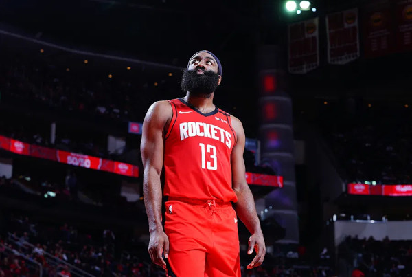

- Separar em atributos
- Escolher a posição
- Escolher o tipo de jogador
- Escolher o estilo de jogo
Para isso imagine que você está no filme Space Jam de 1996
, só que dessa vez não será o protagonista, e sim os monstros alienigenas.
Nesse filme, os Aliens utilizam uma tecnologia que, possibilita roubar as habilidades dos astros da NBA.
Para isso, vamos buscar os melhores SG de toda a história da NBA, utlizando o site 2K Ratings e filtrando pela posição que queremos.
Lembra que falamos para separar os atributos? Mas quais são eles?
Os atributos são:
Pensando em arremessadores da posição de Ala-Armador, Podemos usar o Barba, James Harden que atulmente é o segundo jogaro com mais bolas de 3 convertidas na história da NBA. Outro bom nome pode ser Klay Thompson, que é o terceiro na lista e também é SG.
Vale destacar que Reggie Miller seria outra boa opção mas ele não é licenciado pela 2K, logo, nao existe atributos ou personagem dele no jogo.
Agora para controle de bola, não tem como ser diferente, Allen Iverson é o melhor SG Playmaking da história da liga, já que, Kyrie Irving está listado como Armador (PG) no site, então não pode entrar para nossa lista.

Para defesa, temos um dos melhores defensores da história da NBA, Michael Jordan, que é o melhor SG defensor de todos os tempos, e também para algumas viúvas, o melhor jogador de todos os tempos.

Para atletismo, temos um dos jogadores mais atléticos da história da NBA, Dwyane Wade, que é o melhor SG atlético de todos os tempos.
Outro nome poderia ser Vince Carter, porém, no 2k Ratings ele está listado como SF.

Para infiltração, temos um dos melhores infiltradores da história da NBA, Kobe Bryant, que fazia Dunks incriveis, misturando atleticsmo e tecnica. Mais uma vez Vince Carter poderia entrar nessa lista, outro nome que deve ser mencionado é o de Anthony Edwards.

Agora que temos todos os 5 atributos roubado
dos jogadores, podemos abrir o jogo, você escolhe a versão, no meu caso NBA2K25, vulgo a pior versão do 2K. E vai colocando os numeros dos atributos em seu jogador criando na aba Create Player.
Outra forma é escolher um dos 5 jogadores que você coletou e usar o DNA dele, para isso, fazemos o download da build em Import Build
buscando por: Jordan Rookie.
Assim começamos com uma build com 85 de Overall e ao decorrer das temporadas você adiciona os outros atributos, de maneira livre, ou, usando uma roleta para tornar sua jornada ainda mais desafiadora.
Para isso pode usar o site wordwall que possibilita a criação de roletas personalizadas.
Assim você terá uma build divertida e desafiadora para jogar no MyLeague.
Espero que tenha gostado do tutorial, e que tenha conseguido criar uma build divertida e desafiadora para jogar no MyLeague.
Se tiver alguma dúvida, sugestão ou crítica, pode me chamar no instagram.